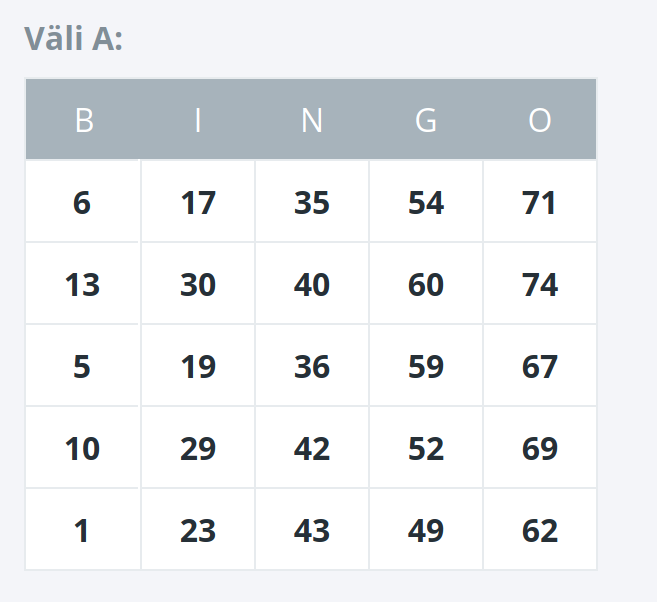

Eesti Loto Pilet
Bingo Loto
Kopeeri Eesti Loto lehelt oma Bingo pileti väli (koos B,I,N,G,O päisega) alla kasti ning vajuta "Valmis".

Kopeeri terve väli alustades ülevalt vasakult B tähest ning lõpetades all paremal numbriga 62.
Telefonil saad seda teha kahe näpuga.
Kui tahad mitu välja siis vajuta "Lisa väli" ja tee sama ka teise väljaga.